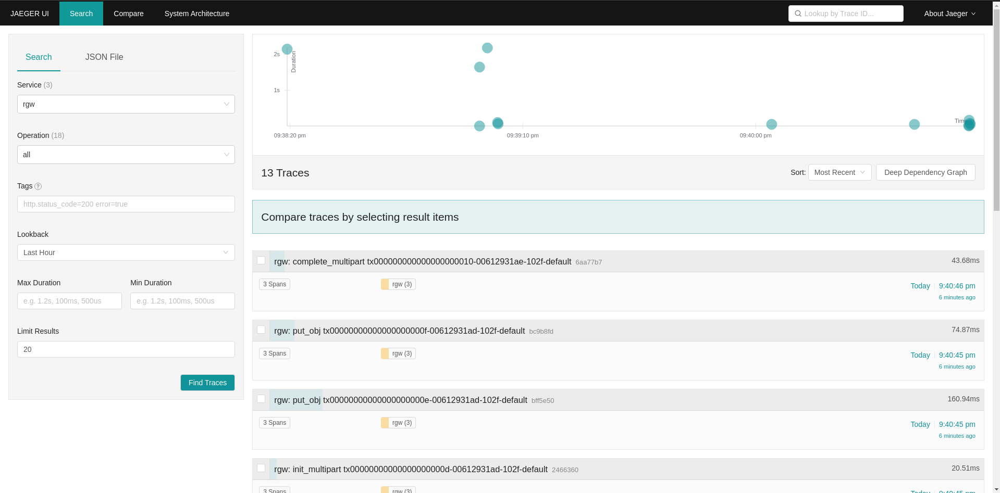
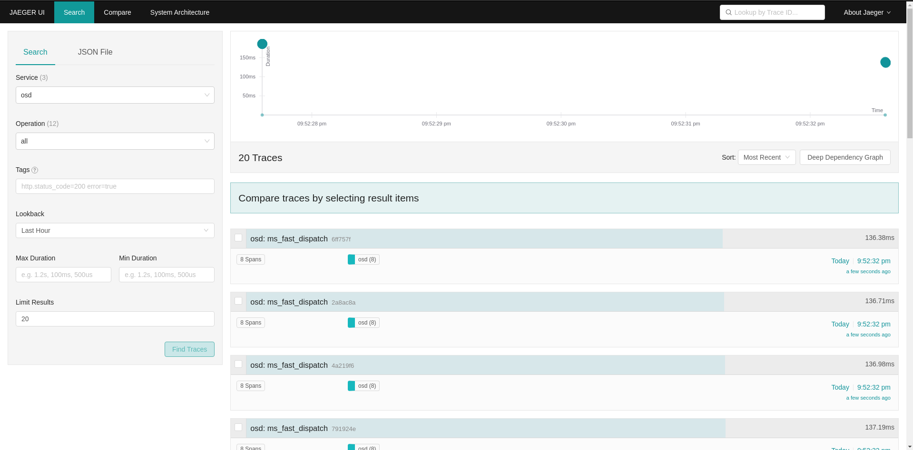

Notice
This document is for a development version of Ceph.
JAEGER- DISTRIBUTED TRACING
Jaeger provides ready-to-use tracing services for distributed systems.
BASIC ARCHITECTURE AND TERMINOLOGY
TRACE: A trace shows the data/execution path through a system.
SPAN: A single unit of a trace. A data structure that stores information such as the operation name, timestamps, and the ordering within a trace.
JAEGER CLIENT: Language-specific implementations of the OpenTracing API.
JAEGER AGENT: A daemon that listens for spans sent over User Datagram Protocol. The agent is meant to be placed on the same host as the instrumented application. (The Jaeger agent acts like a sidecar listener.)
JAEGER COLLECTOR: A daemon that receives spans sent by the Jaeger agent. The Jaeger collector then stitches the spans together to form a trace. (A database can be enabled to persist these traces).
JAEGER QUERY AND CONSOLE FRONTEND: The UI-based frontend that presents reports of the jaeger traces. Accessible at http://<jaeger frontend host>:16686.
Read more about jaeger tracing:.
JAEGER DEPLOYMENT
Jaeger can be deployed using cephadm, or manually.
CEPHADM BASED DEPLOYMENT AS A SERVICE
MANUAL TEST DEPLOYMENT FOR JAEGER OPENTELEMETRY ALL IN ONE CONTAINER
For single node testing Jaeger opentelemetry can be deployed using:
docker run -d --name jaeger \
-e COLLECTOR_ZIPKIN_HOST_PORT=:9411 \
-e COLLECTOR_OTLP_ENABLED=true \
-p 6799:6799/udp \
-p 6832:6832/udp \
-p 5778:5778 \
-p 16686:16686 \
-p 4317:4317 \
-p 4318:4318 \
-p 14250:14250 \
-p 14268:14268 \
-p 14269:14269 \
-p 9411:9411 \
jaegertracing/all-in-one:latest --processor.jaeger-compact.server-host-port=6799
Note
The Jaeger agent must be running on each host (and not running in all-in-one mode). This is because spans are sent to the local Jaeger agent. Spans of hosts that do not have active Jaeger agents will be lost.
The default configured port for Jaeger agent differs from the official default 6831, since Ceph tracers are configured to send tracers to agents that listen to port the configured 6799. Use the option “--processor.jaeger-compact.server-host-port=6799” for manual Jaeger deployments.
HOW TO ENABLE TRACING IN CEPH
Tracing in Ceph is disabled by default.
Tracing can be enabled globally, and tracing can also be enabled separately for each entity (for example, for rgw).
Enable tracing globally:
ceph config set global jaeger_tracing_enable true
Enable tracing for each entity:
ceph config set <entity> jaeger_tracing_enable true
TRACES IN RGW
Traces run on RGW can be found under the Service rgw in the Jaeger Frontend.
REQUESTS
Every user request is traced. Each trace contains tags for Operation name, User id, Object name and Bucket name.
There is also an Upload id tag for Multipart upload operations.
The names of request traces have the following format: <command> <transaction id>.
MULTIPART UPLOAD
There is a kind of trace that consists of a span for each request made by a multipart upload, and it includes all Put Object requests.
The names of multipart traces have the following format: multipart_upload <upload id>.
rgw service in Jaeger Frontend:
{kind=link}

osd service in Jaeger Frontend:
{kind=link}

Brought to you by the Ceph Foundation
The Ceph Documentation is a community resource funded and hosted by the non-profit Ceph Foundation. If you would like to support this and our other efforts, please consider joining now.